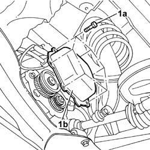

2110C30 GEARBOX REAR COVER - R + R.
- Path
- Procedures > 21 GEARBOX UNIT > 2110 MANUAL GEARBOX WITH DIFFERENTIAL > 2110C GEAR CASES AND COVERS OF MANUAL GEARBOX WITH DIFFERENTIAL > 2110C30 GEARBOX REAR COVER - R + R.
- Kind
- repair procedure (removal / refitting; the operation number is the code)
- Applies to
- all engines; all production periods
- Interactive page
- https://sloeber94.github.io/elrnDB-fDct/en/#/244001029
Applies to: all engines; all production periods
 Removing
Removing
 Refitting
Refitting- Position the vehicle on the lift.
Op. 7055B54 UNDER-ENGINE GUARD - R R
- Undo the gearbox casing drain plug and collect the fluid in a suitable container.
1. Undo the fixing bolts (1a) and, using the special tool, cut the bead of sealant, then remove the gearbox rear cover (1b).
 | Description | Code | Function |
|---|---|---|---|
. | Blade | 1.870.718.000 | Cut sealant |

Applies to: all engines; all production periods
Refitting
Removing- Thoroughly clean any residues of sealant from the contact areas between the rear cover and gearbox.
- Renew the seal in the contact area between the cover and the gearbox, then fit the rear cover and tighten the fixing bolts to torque.
 | Value - daNm | Fastening | Component | Ø |
|---|---|---|---|---|
. | 2 | Bolts | REAR COVER MANUAL GEARBOX/DIFFERENTIAL | - |
- Check that the sealant on the rear cover has hardended, then refill the transmission fluid.
Op. 0010T40 MANUAL GEARBOX OIL CHECK LEVEL AND TOP UP IF NECESSARY
Op. 7055B54 UNDER-ENGINE GUARD - R R
- Remove the vehicle from the lift.